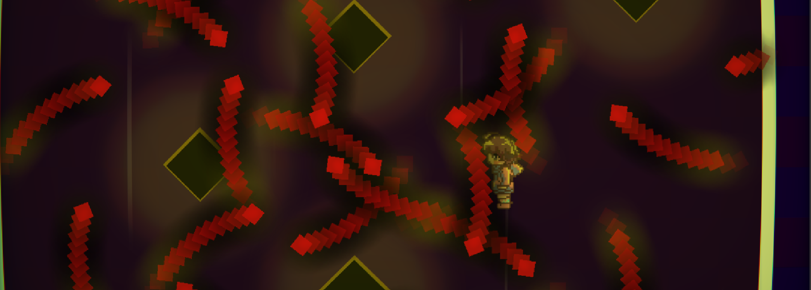
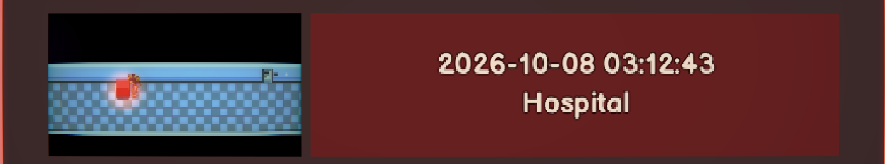

Why
This is just a soft decompilation of the game MIHOSHIHO: It Will Be Okay! to patch the final part (Trials) of the game. Well, last part of the game was hell, look at this bombination.

(Friendly reminder: there's trial from A to J, and no checkpoint in each of the trial)
Also I'm curious of what is the condition for the second ending (I suppose, the game only have 2 endings). I was messing around like a fool for 3 hours and I was lost ¯\_(ツ)_/¯.

Some interesting founding can be found here: fun finding I found.
I enjoy this niche game after all
It has some quirks, but I think it has potential, thanks redtomatochicken for making this!
Of course, the game source code is not public on github or anywhere, we should respect the deverloper(s) here...
| Category | Stuff |
|---|---|
| Kind of project | private |
| Project status | completed mint_duck is finished doing this project (at least for now) |
| Github url | none |
| Total commit | |
| Licence(s) | none |